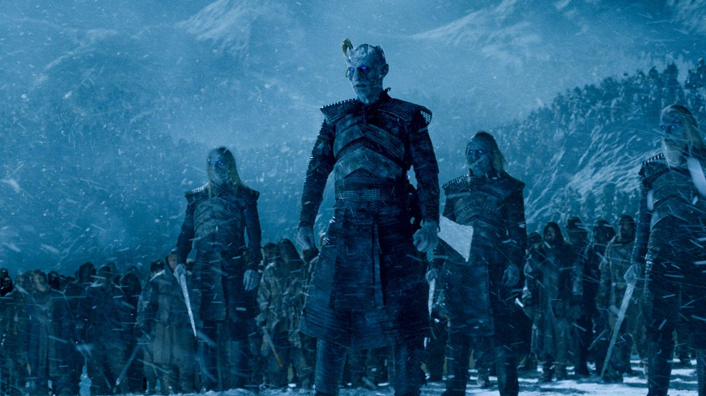

Forces du bien
Spécificités :
Lors de la bataille pour défendre Winterfell contre les Marcheurs Blancs, l'armée du Nord se dresse fièrement comme le dernier rempart de l'humanité contre les forces des ténèbres. Cette armée est composée d'une alliance de différentes maisons nobles du Nord, unies dans l'objectif commun de protéger leur foyer contre la menace des Marcheurs Blancs et de leurs armées de morts-vivants.
L'armée du Nord est composées de traditionnel archers, de lanciers et de soldats armés d'épées et de haches.
A leurs coté , on retrouve le peuple libre , barbare venue du Nord , ainsi que des Dothrakis, barbare venue d'au dela de la mer.
On retrouvre également 2 dragons.
Forces du mal
Spécificités :
Les Marcheurs Blancs sont les chefs de l'armée . Ils sont des êtres morts-vivants, autrefois des humains transformés par la magie glaciale des Enfants de la Forêt. Ils sont reconnaissables par leur apparence glaciale, leurs yeux bleus perçants et leur capacité à contrôler la glace. Les Marcheurs Blancs sont des guerriers redoutables, capables de tuer et de ressusciter les morts pour les ajouter à leur armée.
L'armée des Marcheurs Blancs est principalement constituée de morts-vivants, des cadavres ressuscités qui n'ont plus de volonté propre. Ils se lèvent de leurs tombes pour servir les Marcheurs Blancs et sont très difficiles à tuer, à moins d'être détruits par le feu,le verredragon(obsidienne) ou l'acier valyrien.
En plus d'humains ressuscités, les marcheurs blancs ont pu ramener à la vie des animaux (ours),des géants ainsi qu'un des dragon de daenerys.
Grande Bataille de Winterfell | |
Informations générales | |
| Date | An 305 |
| Lieu | Winterfell, Nord |
| Issue | Victoire décisive des Vivants |
Belligérants | |
| Alliance du Nord | Les Marcheurs blancs |
 Maison Targaryen Maison Targaryen |
L'armée des Morts |
| Peuple libre | |
Commandants | |
 Daenerys Targaryen Daenerys Targaryen |
Le Roi de la Nuit |
| Jon Snow | |
| _ Jorah Mormont |
|
| Jaime Lannister | |
| Ver Gris |
|
| Béric Dondarrion | |
Forces en présence | |
| Plusieurs milliers de Nordiens | Une marée de mort vivant |
| 8000 Immaculés |
1 dragon réssuscité |
| 10000 Dothrakis |
|
| 2 dragons |
|
| 2000 Chevaliers du Val | |
Pertes | |
| ~9000 hommes | Destruction totale |